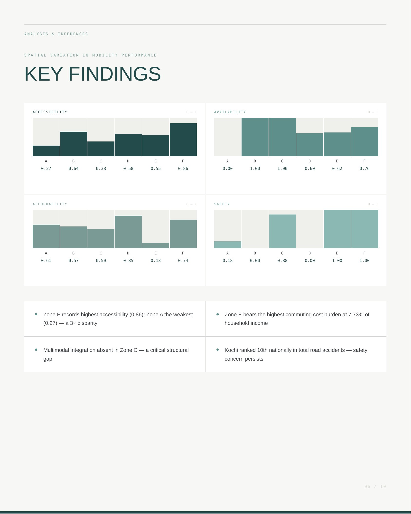

M.Plan Thesis · 2026Featured case study / 01
Assessment of Urban Mobility Equity in Kochi
A spatial assessment of urban mobility equity across Kochi using accessibility, availability, affordability and safety as analytical dimensions, leading to planning proposals for transit integration, bus priority, multimodal connectivity and pedestrian safety.
Open case study →